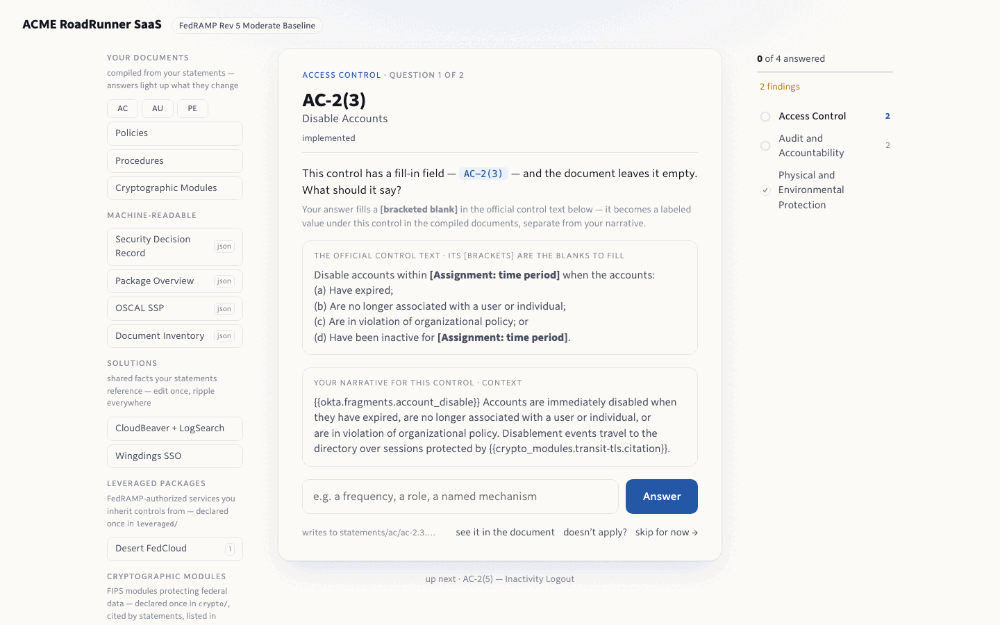
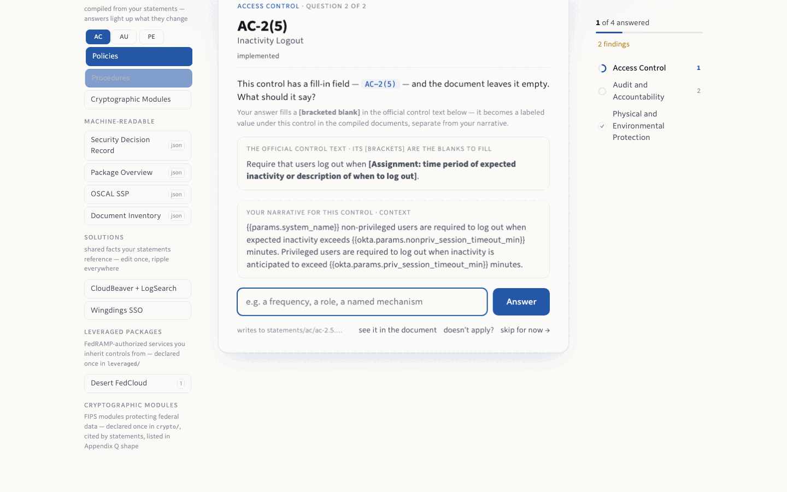
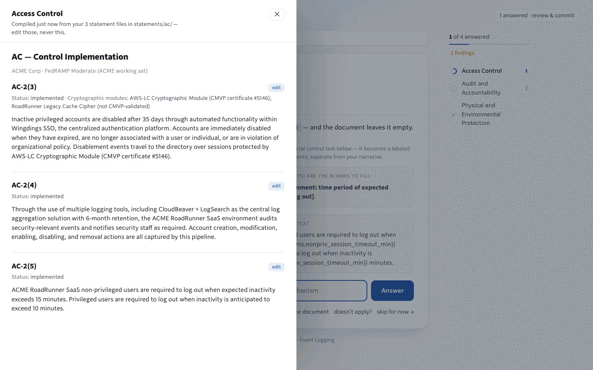
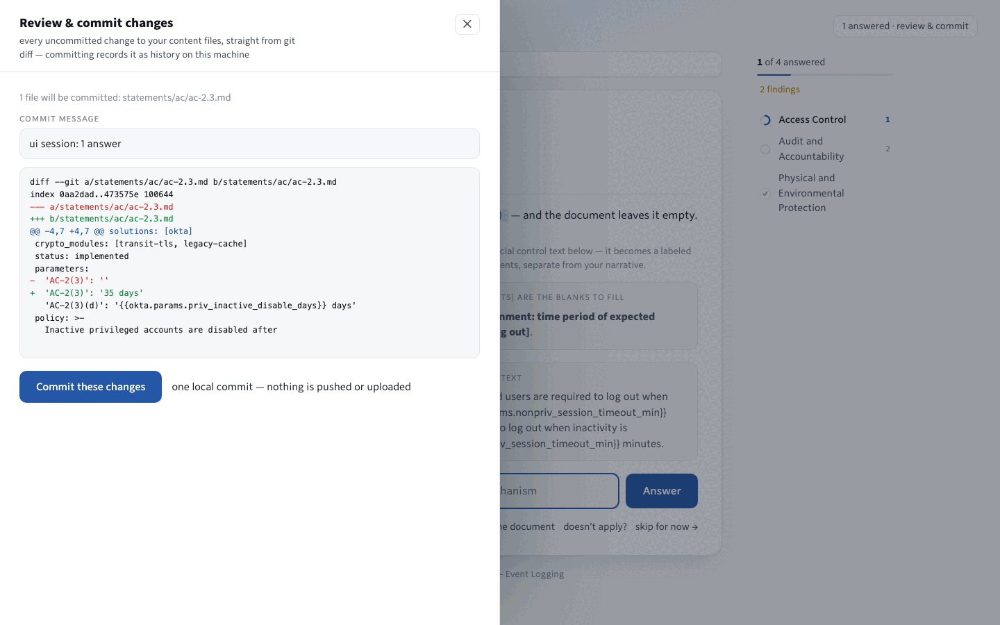
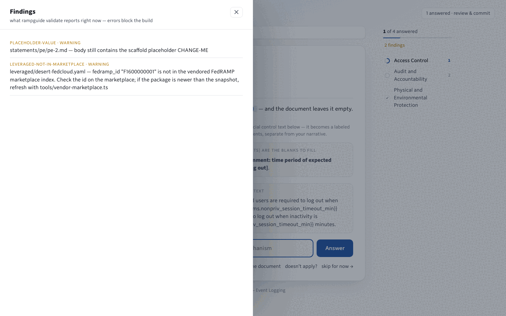

The product, up close.
The interview that fills the gaps in your package, the documents lighting up as you answer, the reader, review and commit, the findings, and the command line underneath. Shown on a fictional program, ACME's RoadRunner, with a few fields left open.

It asks you only what the program still needs.
Open the ui on your repo and it shows one question at a time: a control whose official text has a blank you have not filled, or a placeholder left over from setup. The official wording is right there with its bracket highlighted, and your own narrative sits underneath for context.
- Nothing leaves your machine. The page is served on your own computer; closing the terminal stops it.
- Every answer writes to a file in your repo. The card tells you which one.
- "Doesn't apply?" marks the control not applicable and asks for the justification the program requires instead.

Answer, and watch what it touches light up.
The documents in the left rail pulse when an answer feeds them. That is not a guess: it is computed from the same dependency graph the build uses, so what lights up is exactly what will change on the next rebuild.
- Progress per family in the right rail, with the families you have finished ticked off.
- Answered questions compress into a stack above the current one; click any to change your mind.
- The touched documents keep a dot for the rest of the session, so you always know what your work changed.

Read any document as it would be generated right now.
Click a document in the rail and the reader compiles it on the spot from your current files. The line at the top says where it came from and reminds you that the files are the thing to edit, never the output.
- Narratives, policies, procedures, the crypto-module table all read this way.
- The machine-readable files get a plain-language explainer instead of a wall of JSON.

Your session becomes one commit, after you read the diff.
The receipt in the corner counts what you changed. Click it and you see the real diff of your content files, a commit message you can edit, and one button. It records a local commit and nothing else: the ui never pushes and never uploads.
- History, review, blame. Compliance changes get the same paper trail as code.
- Edits made outside the tab (a teammate, your editor) are picked up too, and the message says so.

The validator's report, live, in plain sentences.
Everything the build would complain about is listed here as you work: a placeholder you forgot, a solution a statement references that does not exist, a control in your baseline with no statement yet. Errors block the build; warnings do not.
Everything the ui does, a command does too.
Scripts, CI, a locked-down build server: the same engine runs anywhere Node runs, with no network and no account.
$ rampguide-import ssp-appendix-a.docx --out acme-compliance
✓ imported 323 controls → acme-compliance/
(12 with warnings — see import-report.md)
$ rampguide validate --content acme-compliance
✓ 323 statements, 2 solutions, 0 errorsStart from what you have
Word Appendix A, Appendix Q, or an OSCAL export. Every word preserved; the report lists what needs a human.
$ rampguide build --content . --out dist
✓ built 18 docs, policies, procedures, crypto-modules,
fedramp/sdr.json, fedramp/cpo.json, oscal/ssp.json,
inventory.json → dist/
$ rampguide affected --content . --since main
requirements affected since main: ac-2.3 ac-2.5Generate the package, see what a change touches
Same facts in, same bytes out. The blast-radius report belongs on every pull request.
$ rampguide add sso --content .
? Which variant? okta
? After how many days without a sign-in is an
account automatically disabled? (35) 30
✓ assembled sso (okta) → solutions/sso/solution.yaml
answers 12 requirement(s) missing statements: …Install pre-written answers
A pack asks a few questions and dozens of requirements gain solid language. Your overrides survive every update.
$ rampguide ocr --content . --since 2026-q2
✓ ocr with 14 change entries since 2026-q2 → dist/fedramp/ocr.json
$ rampguide scn --content . --since main
✓ Adaptive change, 1 commit(s), 2 impacted requirement(s)
$ rampguide vdr scans/2026-08-vdr.json
4 vulnerabilities: 2 still active, 1 fully mitigated, 1 false positive
✓ 1 file(s) passContinuous monitoring from the same repo
Quarterly report from your commits, change notification from a branch, vulnerability reports checked before submission.
One fact, every document it feeds.
This is the whole idea in one picture. Flip the highlighted fact and watch the change travel through the pipeline. Switch tracks to see the same facts produce the other FedRAMP dialect.
Want to see it on your own program?
Complete-tier onboarding starts with your existing documents. Or get the library and run the engine yourself today.